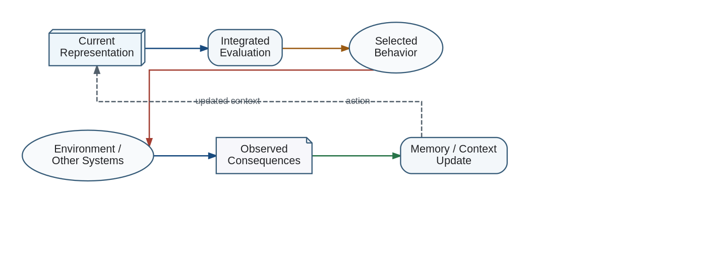

Integrated Evaluation participates in a closed loop: representations and candidate plans are evaluated; an action is selected; the environment and internal state change; the observed result is represented and evaluated again.
Evaluation Feedback Loop

This loop allows evaluation to learn from consequences without pretending that the evaluator is semantically expressible as a fixed hand-written utility function.